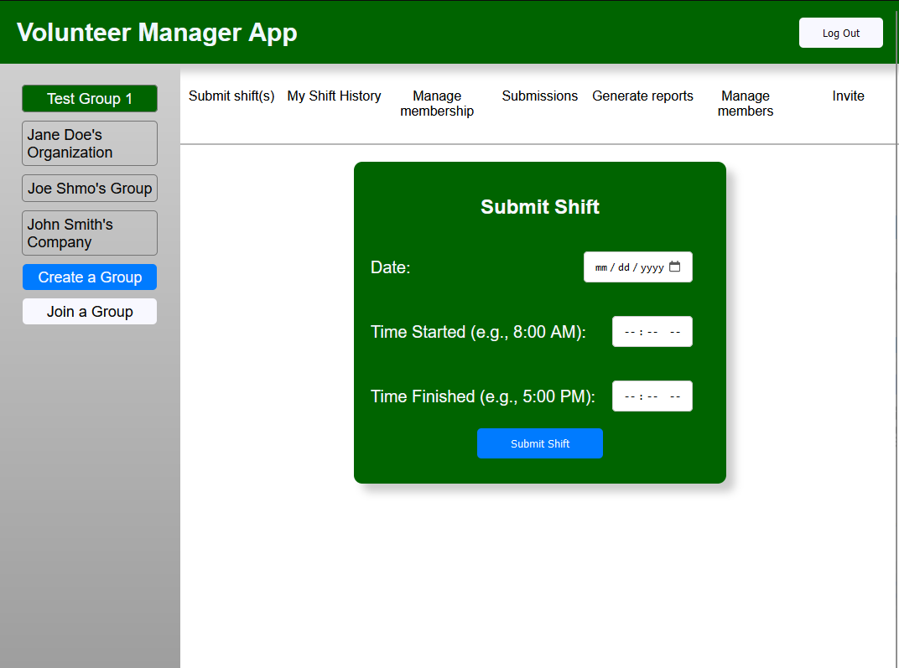

Bryce Moore
Phone: 678-684-9241 | Email: brycepmoore@gmail.com
GitHub: https://github.com/Bryce-Moore
Objective
Aspiring software engineer seeking the opportunity to gain professional experience. Proficient in developing web applications, RESTful APIs, and managing static servers on Linux cloud platforms. Interested in all aspects of quality software delivery with a willingness to learn and take on additional responsibilities during an internship.
Education
Kennesaw State University, B.S. Computer Science - Expected Graduation August 2024
Relevant Coursework: User Interface Engineering, Internet Programming, Software Architecture & Design, Cloud Software Development, Database Systems, Data Structures
Technical Skills
Typescript/JS, React, Python, MySQL, Apache, Linux Terminal
Projects
AudioInsight
GithubA React application written in TypeScript designed to display unique song metrics from Spotify's API based on user searches. Implements token-based authorization with PKCE and animated graphics to display metrics.

SP-8 VolunteerManager
GithubSenior university project focused on designing core functionalities of a React application for logging volunteer shifts through user-friendly online forms. Features token-based authorization and role management systems.
ConMan
GithubA CLI tool in Golang for managing SSH connections, allowing users to save and establish connections using custom names and flags for management commands.
Work Experience
Assembler and Machinist, Stack-Light.com & CMH Industries, Summer 2023
- Assembled and shipped orders of industrial signal lights and accessories.
- Followed schematics for assembly and utilized various machining tools.
- Performed basic soldering to connect wires to circuit boards.
Team Member, Zaxby's, 2016-Present
- Handled customer service, order taking, and cooking using various kitchen equipment.
- Managed inventory receiving and unloading.